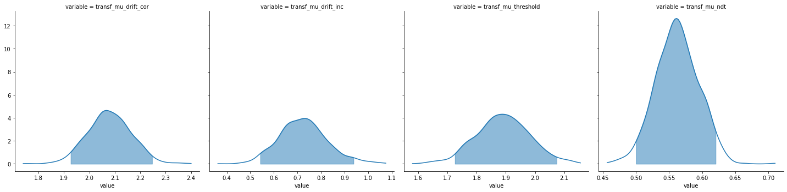
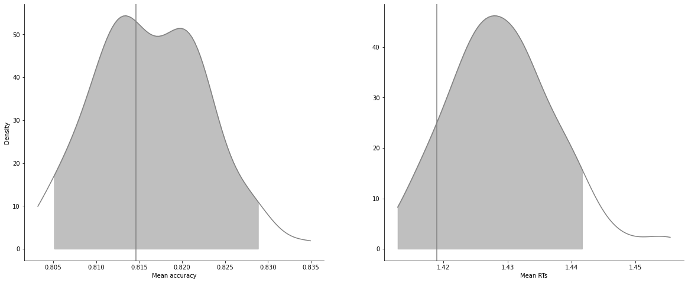
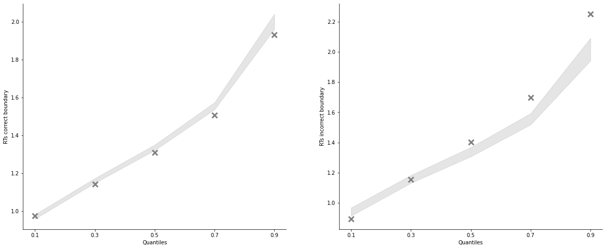

[1]:
import rlssm
import pandas as pd
import os
Import the grouped data¶
[2]:
par_path = os.path.abspath(os.path.join(os.getcwd(), os.pardir))
data_path = os.path.join(par_path, 'data/data_experiment.csv')
data = pd.read_csv(data_path, index_col=0)
#data = data[data.participant == 20].reset_index(drop=True)
data['block_label'] += 1
data.head()
[2]:
| participant | block_label | trial_block | f_cor | f_inc | cor_option | inc_option | times_seen | rt | accuracy | |
|---|---|---|---|---|---|---|---|---|---|---|
| 0 | 1 | 1.0 | 1.0 | 43.0 | 39.0 | 2 | 1 | 1.0 | 1.244082 | 0.0 |
| 1 | 1 | 1.0 | 2.0 | 60.0 | 50.0 | 4 | 3 | 1.0 | 1.101821 | 1.0 |
| 2 | 1 | 1.0 | 3.0 | 44.0 | 36.0 | 4 | 2 | 2.0 | 1.029923 | 0.0 |
| 3 | 1 | 1.0 | 4.0 | 55.0 | 55.0 | 4 | 3 | 2.5 | 1.368007 | 0.0 |
| 4 | 1 | 1.0 | 5.0 | 52.0 | 49.0 | 4 | 3 | 3.5 | 1.039329 | 1.0 |
[3]:
model = rlssm.RDModel_2A(hierarchical_levels=2, starting_point_bias=False)
INFO:pystan:COMPILING THE C++ CODE FOR MODEL anon_model_93acd7ef7c379e76d993fb3c5a4926c0 NOW.
[4]:
# sampling parameters
n_iter = 5000
n_chains = 2
n_thin = 5
# bayesian model
drift_priors = None
threshold_priors = None
ndt_priors = None
[5]:
model_fit = model.fit(
data,
drift_priors=drift_priors,
threshold_priors=threshold_priors,
ndt_priors=ndt_priors,
thin = n_thin,
iter = n_iter,
chains = n_chains)
WARNING:pystan:Maximum (flat) parameter count (1000) exceeded: skipping diagnostic tests for n_eff and Rhat.
To run all diagnostics call pystan.check_hmc_diagnostics(fit)
Checks MCMC diagnostics:
n_eff / iter looks reasonable for all parameters
0.0 of 1000 iterations ended with a divergence (0.0%)
0 of 1000 iterations saturated the maximum tree depth of 10 (0.0%)
E-BFMI indicated no pathological behavior
get Rhat¶
[6]:
model_fit.rhat.describe()
[6]:
| rhat | |
|---|---|
| count | 116.000000 |
| mean | 1.053189 |
| std | 0.285620 |
| min | 0.998172 |
| 25% | 0.999906 |
| 50% | 1.002994 |
| 75% | 1.010663 |
| max | 3.222410 |
[7]:
model_fit.rhat.head()
[7]:
| rhat | variable | |
|---|---|---|
| 0 | 1.055353 | mu_ndt |
| 1 | 1.111076 | mu_threshold |
| 2 | 1.030196 | mu_drift_cor |
| 3 | 1.017476 | mu_drift_inc |
| 4 | 1.035262 | sd_ndt |
get wAIC¶
[8]:
model_fit.waic
[8]:
{'lppd': -4974.524331182194,
'p_waic': 207.16392260327547,
'waic': 10363.37650757094,
'waic_se': 257.77527206431984}
Posteriors¶
[9]:
model_fit.samples
[9]:
| chain | draw | transf_mu_drift_cor | transf_mu_drift_inc | transf_mu_threshold | transf_mu_ndt | drift_cor_sbj[1] | drift_cor_sbj[2] | drift_cor_sbj[3] | drift_cor_sbj[4] | ... | ndt_sbj[18] | ndt_sbj[19] | ndt_sbj[20] | ndt_sbj[21] | ndt_sbj[22] | ndt_sbj[23] | ndt_sbj[24] | ndt_sbj[25] | ndt_sbj[26] | ndt_sbj[27] | |
|---|---|---|---|---|---|---|---|---|---|---|---|---|---|---|---|---|---|---|---|---|---|
| 0 | 0 | 96 | 2.024084 | 0.813195 | 1.679461 | 0.571327 | 2.212481 | 2.374955 | 2.100199 | 1.674838 | ... | 0.600649 | 0.162315 | 0.569228 | 0.353015 | 0.637126 | 0.336681 | 0.564828 | 0.657409 | 0.594572 | 0.602657 |
| 1 | 0 | 253 | 2.154390 | 0.803259 | 1.701076 | 0.527562 | 2.366777 | 2.237352 | 2.242954 | 1.414345 | ... | 0.506658 | 0.266585 | 0.732325 | 0.569860 | 0.585738 | 0.505971 | 0.575589 | 0.672755 | 0.599435 | 0.623567 |
| 2 | 0 | 346 | 1.932848 | 0.653274 | 1.832349 | 0.610736 | 2.337337 | 2.272466 | 2.131655 | 1.761665 | ... | 0.558618 | 0.201252 | 0.621310 | 0.587833 | 0.497043 | 0.386546 | 0.529936 | 0.641226 | 0.580478 | 0.618171 |
| 3 | 0 | 164 | 2.118452 | 0.728736 | 1.891323 | 0.593597 | 2.428230 | 2.418022 | 2.252123 | 1.692155 | ... | 0.583706 | 0.271444 | 0.507484 | 0.411292 | 0.557168 | 0.453308 | 0.502530 | 0.636780 | 0.586832 | 0.715582 |
| 4 | 0 | 234 | 2.067161 | 0.791120 | 2.007493 | 0.555400 | 2.000411 | 2.277085 | 2.351685 | 1.848537 | ... | 0.583363 | 0.195113 | 0.570537 | 0.463449 | 0.557229 | 0.424492 | 0.418725 | 0.691018 | 0.591138 | 0.561365 |
| ... | ... | ... | ... | ... | ... | ... | ... | ... | ... | ... | ... | ... | ... | ... | ... | ... | ... | ... | ... | ... | ... |
| 995 | 1 | 455 | 2.077349 | 0.743724 | 1.967561 | 0.515770 | 2.533336 | 2.198427 | 2.347209 | 1.779042 | ... | 0.515215 | 0.209153 | 0.638985 | 0.500824 | 0.630344 | 0.367033 | 0.566903 | 0.695771 | 0.362031 | 0.667076 |
| 996 | 1 | 370 | 2.019995 | 0.540316 | 1.860530 | 0.533483 | 2.284487 | 2.488436 | 2.592761 | 1.581810 | ... | 0.499680 | 0.260273 | 0.640643 | 0.522652 | 0.535091 | 0.482348 | 0.549581 | 0.689316 | 0.368562 | 0.629492 |
| 997 | 1 | 5 | 2.118212 | 0.686289 | 1.925044 | 0.554767 | 2.450450 | 2.405640 | 2.341872 | 1.546947 | ... | 0.454892 | 0.265980 | 0.726397 | 0.473075 | 0.580583 | 0.460843 | 0.535467 | 0.680920 | 0.355521 | 0.696842 |
| 998 | 1 | 368 | 2.029029 | 0.895380 | 1.955192 | 0.552224 | 2.235962 | 2.358497 | 2.338999 | 1.621163 | ... | 0.504883 | 0.201740 | 0.605645 | 0.561874 | 0.655566 | 0.466624 | 0.555265 | 0.635697 | 0.379285 | 0.715189 |
| 999 | 1 | 484 | 2.001857 | 0.671676 | 1.895660 | 0.506930 | 2.323443 | 2.322500 | 2.598786 | 1.604787 | ... | 0.487746 | 0.177040 | 0.707505 | 0.542603 | 0.623677 | 0.364783 | 0.554235 | 0.777406 | 0.310378 | 0.617140 |
1000 rows × 114 columns
[10]:
model_fit.trial_samples
[10]:
OrderedDict([('drift_cor_t',
array([[2.21248086, 2.21248086, 2.21248086, ..., 1.7943703 , 1.7943703 ,
1.7943703 ],
[2.36677659, 2.36677659, 2.36677659, ..., 1.80840157, 1.80840157,
1.80840157],
[2.33733654, 2.33733654, 2.33733654, ..., 1.77776646, 1.77776646,
1.77776646],
...,
[2.45045006, 2.45045006, 2.45045006, ..., 1.69233088, 1.69233088,
1.69233088],
[2.23596214, 2.23596214, 2.23596214, ..., 1.69880564, 1.69880564,
1.69880564],
[2.32344349, 2.32344349, 2.32344349, ..., 1.72779118, 1.72779118,
1.72779118]])),
('drift_inc_t',
array([[0.80187352, 0.80187352, 0.80187352, ..., 0.8945148 , 0.8945148 ,
0.8945148 ],
[1.04341399, 1.04341399, 1.04341399, ..., 0.74145849, 0.74145849,
0.74145849],
[0.78860196, 0.78860196, 0.78860196, ..., 0.60066388, 0.60066388,
0.60066388],
...,
[0.52484751, 0.52484751, 0.52484751, ..., 0.50452157, 0.50452157,
0.50452157],
[0.95974687, 0.95974687, 0.95974687, ..., 0.61791253, 0.61791253,
0.61791253],
[0.63624203, 0.63624203, 0.63624203, ..., 0.49483637, 0.49483637,
0.49483637]])),
('threshold_t',
array([[1.61832224, 1.61832224, 1.61832224, ..., 2.08555385, 2.08555385,
2.08555385],
[1.68019262, 1.68019262, 1.68019262, ..., 1.99005256, 1.99005256,
1.99005256],
[1.59977778, 1.59977778, 1.59977778, ..., 2.01828876, 2.01828876,
2.01828876],
...,
[1.63237305, 1.63237305, 1.63237305, ..., 1.72367137, 1.72367137,
1.72367137],
[1.79779887, 1.79779887, 1.79779887, ..., 1.75835762, 1.75835762,
1.75835762],
[1.59920739, 1.59920739, 1.59920739, ..., 1.82160947, 1.82160947,
1.82160947]])),
('ndt_t',
array([[0.71205882, 0.71205882, 0.71205882, ..., 0.6026574 , 0.6026574 ,
0.6026574 ],
[0.71389538, 0.71389538, 0.71389538, ..., 0.62356651, 0.62356651,
0.62356651],
[0.72081364, 0.72081364, 0.72081364, ..., 0.61817059, 0.61817059,
0.61817059],
...,
[0.6970042 , 0.6970042 , 0.6970042 , ..., 0.6968417 , 0.6968417 ,
0.6968417 ],
[0.6581111 , 0.6581111 , 0.6581111 , ..., 0.71518943, 0.71518943,
0.71518943],
[0.70019915, 0.70019915, 0.70019915, ..., 0.6171398 , 0.6171398 ,
0.6171398 ]]))])
[11]:
model_fit.plot_posteriors(height=5, show_intervals='HDI');

Posterior predictives¶
[12]:
pp_rt, pp_acc = model_fit.get_posterior_predictives(n_posterior_predictives=100)
[13]:
pp_rt
[13]:
array([[1.52405882, 0.98405882, 1.16505882, ..., 2.0466574 , 2.4336574 ,
2.3366574 ],
[1.29889538, 1.26489538, 1.08189538, ..., 1.61656651, 1.49356651,
2.29356651],
[1.29981364, 1.61381364, 1.23581364, ..., 2.16217059, 1.48217059,
1.73317059],
...,
[1.27101922, 1.28101922, 1.13001922, ..., 1.20609291, 1.58509291,
1.96309291],
[1.2095643 , 1.3085643 , 1.1285643 , ..., 1.38914787, 2.79214787,
1.64414787],
[1.5560882 , 1.2280882 , 1.3740882 , ..., 1.2222051 , 1.6802051 ,
1.5362051 ]])
[14]:
pp_acc
[14]:
array([[1., 1., 1., ..., 1., 0., 1.],
[1., 1., 1., ..., 0., 1., 0.],
[1., 1., 1., ..., 1., 0., 1.],
...,
[1., 1., 1., ..., 1., 1., 1.],
[1., 1., 1., ..., 1., 1., 0.],
[1., 1., 0., ..., 1., 1., 1.]])
[15]:
pp_summary = model_fit.get_posterior_predictives_summary(n_posterior_predictives=100)
pp_summary
[15]:
| mean_accuracy | mean_rt | skewness | quant_10_rt_incorrect | quant_30_rt_incorrect | quant_50_rt_incorrect | quant_70_rt_incorrect | quant_90_rt_incorrect | quant_10_rt_correct | quant_30_rt_correct | quant_50_rt_correct | quant_70_rt_correct | quant_90_rt_correct | |
|---|---|---|---|---|---|---|---|---|---|---|---|---|---|
| sample | |||||||||||||
| 1 | 0.805229 | 1.423341 | 1.349305 | 0.945015 | 1.160300 | 1.357564 | 1.593966 | 2.020891 | 0.969166 | 1.155154 | 1.329315 | 1.555770 | 1.991760 |
| 2 | 0.814356 | 1.413038 | 1.636630 | 0.940436 | 1.142721 | 1.315966 | 1.544461 | 2.002285 | 0.964666 | 1.147665 | 1.324714 | 1.541812 | 1.977539 |
| 3 | 0.815439 | 1.442355 | 1.635879 | 0.941576 | 1.155727 | 1.351037 | 1.603011 | 2.080856 | 0.966741 | 1.160618 | 1.340618 | 1.574883 | 2.028171 |
| 4 | 0.815439 | 1.426854 | 1.713456 | 0.922478 | 1.146243 | 1.320941 | 1.556945 | 1.984123 | 0.975580 | 1.160146 | 1.329530 | 1.557146 | 1.988545 |
| 5 | 0.815903 | 1.428825 | 1.486403 | 0.925352 | 1.138019 | 1.310191 | 1.553030 | 1.970063 | 0.976156 | 1.157382 | 1.339339 | 1.568214 | 2.027803 |
| ... | ... | ... | ... | ... | ... | ... | ... | ... | ... | ... | ... | ... | ... |
| 96 | 0.810489 | 1.440522 | 1.473403 | 0.947989 | 1.146391 | 1.327645 | 1.575494 | 2.039071 | 0.982759 | 1.173387 | 1.339733 | 1.569629 | 2.028781 |
| 97 | 0.812655 | 1.419096 | 1.572623 | 0.922483 | 1.155125 | 1.321369 | 1.565369 | 1.956401 | 0.960416 | 1.154178 | 1.331369 | 1.555233 | 1.983246 |
| 98 | 0.815130 | 1.430170 | 1.545558 | 0.941529 | 1.170360 | 1.334040 | 1.560018 | 1.966476 | 0.972122 | 1.164448 | 1.341534 | 1.562144 | 2.004652 |
| 99 | 0.832766 | 1.429985 | 1.772907 | 0.936961 | 1.151148 | 1.329999 | 1.535564 | 2.046303 | 0.976675 | 1.158859 | 1.327303 | 1.543774 | 2.000014 |
| 100 | 0.799350 | 1.431601 | 1.826195 | 0.934314 | 1.163625 | 1.346205 | 1.568792 | 2.019246 | 0.974863 | 1.156141 | 1.336623 | 1.547775 | 2.005002 |
100 rows × 13 columns
[16]:
model_fit.plot_mean_posterior_predictives(n_posterior_predictives=100, figsize=(20,8), show_intervals='HDI')
[16]:


[17]:
model_fit.plot_quantiles_posterior_predictives(n_posterior_predictives=100, kind='shades')
[17]:


[18]:
import numpy as np
[19]:
data['choice_pair'] = 'AB'
data.loc[(data.cor_option == 3) & (data.inc_option == 1), 'choice_pair'] = 'AC'
data.loc[(data.cor_option == 4) & (data.inc_option == 2), 'choice_pair'] = 'BD'
data.loc[(data.cor_option == 4) & (data.inc_option == 3), 'choice_pair'] = 'CD'
data['block_bins'] = pd.cut(data.trial_block, 8, labels=np.arange(1, 9))
[20]:
data.head()
[20]:
| index | participant | block_label | trial_block | f_cor | f_inc | cor_option | inc_option | times_seen | rt | accuracy | accuracy_rescale | choice_pair | block_bins | |
|---|---|---|---|---|---|---|---|---|---|---|---|---|---|---|
| 0 | 0 | 1 | 1.0 | 1.0 | 43.0 | 39.0 | 2 | 1 | 1.0 | 1.244082 | 0.0 | 2 | AB | 1 |
| 1 | 1 | 1 | 1.0 | 2.0 | 60.0 | 50.0 | 4 | 3 | 1.0 | 1.101821 | 1.0 | 1 | CD | 1 |
| 2 | 2 | 1 | 1.0 | 3.0 | 44.0 | 36.0 | 4 | 2 | 2.0 | 1.029923 | 0.0 | 2 | BD | 1 |
| 3 | 3 | 1 | 1.0 | 4.0 | 55.0 | 55.0 | 4 | 3 | 2.5 | 1.368007 | 0.0 | 2 | CD | 1 |
| 4 | 4 | 1 | 1.0 | 5.0 | 52.0 | 49.0 | 4 | 3 | 3.5 | 1.039329 | 1.0 | 1 | CD | 1 |
[21]:
model_fit.get_grouped_posterior_predictives_summary(
grouping_vars=['block_label', 'choice_pair'],
quantiles=[.3, .5, .7],
n_posterior_predictives=100)
[21]:
| mean_accuracy | mean_rt | skewness | quant_30_rt_incorrect | quant_30_rt_correct | quant_50_rt_incorrect | quant_50_rt_correct | quant_70_rt_incorrect | quant_70_rt_correct | |||
|---|---|---|---|---|---|---|---|---|---|---|---|
| block_label | choice_pair | sample | |||||||||
| 1.0 | AB | 1 | 0.813780 | 1.434645 | 1.506335 | 1.208097 | 1.153072 | 1.428592 | 1.319905 | 1.738301 | 1.592655 |
| 2 | 0.813780 | 1.421802 | 1.408471 | 1.188743 | 1.132946 | 1.390157 | 1.325046 | 1.626286 | 1.535339 | ||
| 3 | 0.834264 | 1.425701 | 2.786443 | 1.231007 | 1.142028 | 1.365099 | 1.308629 | 1.635950 | 1.554902 | ||
| 4 | 0.828678 | 1.441704 | 2.261217 | 1.158149 | 1.151563 | 1.326760 | 1.303308 | 1.609846 | 1.545129 | ||
| 5 | 0.862197 | 1.392957 | 1.561590 | 1.164998 | 1.140908 | 1.339867 | 1.284066 | 1.583332 | 1.497308 | ||
| ... | ... | ... | ... | ... | ... | ... | ... | ... | ... | ... | ... |
| 3.0 | CD | 96 | 0.805556 | 1.434929 | 2.662859 | 1.258070 | 1.162867 | 1.438194 | 1.336463 | 1.641050 | 1.555273 |
| 97 | 0.848148 | 1.406045 | 1.293612 | 1.171808 | 1.125176 | 1.313851 | 1.326901 | 1.609275 | 1.531926 | ||
| 98 | 0.801852 | 1.416132 | 1.455323 | 1.107222 | 1.172873 | 1.296773 | 1.332621 | 1.447820 | 1.582065 | ||
| 99 | 0.842593 | 1.426774 | 1.413647 | 1.240377 | 1.153296 | 1.428033 | 1.324303 | 1.636703 | 1.508438 | ||
| 100 | 0.803704 | 1.451096 | 1.891283 | 1.170205 | 1.161109 | 1.351668 | 1.320151 | 1.578289 | 1.551031 |
1200 rows × 9 columns
[24]:
model_fit.get_grouped_posterior_predictives_summary(
grouping_vars=['block_bins'],
quantiles=[.3, .5, .7],
n_posterior_predictives=100)
[24]:
| mean_accuracy | mean_rt | skewness | quant_30_rt_incorrect | quant_30_rt_correct | quant_50_rt_incorrect | quant_50_rt_correct | quant_70_rt_incorrect | quant_70_rt_correct | ||
|---|---|---|---|---|---|---|---|---|---|---|
| block_bins | sample | |||||||||
| 1 | 1 | 0.801235 | 1.426323 | 1.199745 | 1.135681 | 1.177682 | 1.364409 | 1.338228 | 1.546828 | 1.560567 |
| 2 | 0.793827 | 1.442715 | 1.544201 | 1.122583 | 1.198899 | 1.277585 | 1.380085 | 1.540051 | 1.585393 | |
| 3 | 0.817284 | 1.423955 | 1.891851 | 1.124689 | 1.159334 | 1.326422 | 1.331121 | 1.535166 | 1.565298 | |
| 4 | 0.818519 | 1.443058 | 1.705463 | 1.169881 | 1.179347 | 1.344941 | 1.350146 | 1.504061 | 1.607854 | |
| 5 | 0.829630 | 1.428080 | 2.027813 | 1.137542 | 1.139911 | 1.347546 | 1.327417 | 1.558505 | 1.543440 | |
| ... | ... | ... | ... | ... | ... | ... | ... | ... | ... | ... |
| 8 | 96 | 0.809824 | 1.468487 | 1.953682 | 1.199295 | 1.174649 | 1.391773 | 1.370599 | 1.579984 | 1.600103 |
| 97 | 0.833753 | 1.411856 | 1.208481 | 1.130744 | 1.149908 | 1.322863 | 1.333476 | 1.543576 | 1.560344 | |
| 98 | 0.818640 | 1.408953 | 1.450242 | 1.176023 | 1.134037 | 1.326317 | 1.314014 | 1.588802 | 1.544645 | |
| 99 | 0.803526 | 1.425934 | 1.522895 | 1.137050 | 1.156272 | 1.360092 | 1.340613 | 1.551743 | 1.571197 | |
| 100 | 0.798489 | 1.396271 | 1.886472 | 1.129234 | 1.137936 | 1.284514 | 1.311133 | 1.555684 | 1.520319 |
800 rows × 9 columns
[25]:
model_fit.plot_mean_grouped_posterior_predictives(grouping_vars=['block_bins'],
n_posterior_predictives=100,
figsize=(20,8))
[25]:


[23]:
model_fit.plot_quantiles_grouped_posterior_predictives(
n_posterior_predictives=100,
grouping_var='choice_pair',
kind='shades',
quantiles=[.1, .3, .5, .7, .9]);

Get last values for eventual further sampling¶
[26]:
sv = model_fit.last_values
sv
[26]:
| chain | draw | warmup | mu_drift_cor | mu_drift_inc | mu_ndt | mu_threshold | sd_drift_cor | sd_drift_inc | sd_ndt | ... | z_threshold[26] | z_threshold[27] | z_threshold[2] | z_threshold[3] | z_threshold[4] | z_threshold[5] | z_threshold[6] | z_threshold[7] | z_threshold[8] | z_threshold[9] | |
|---|---|---|---|---|---|---|---|---|---|---|---|---|---|---|---|---|---|---|---|---|---|
| 499 | 0 | 499 | 0 | 2.069530 | -0.387466 | -0.277144 | 1.605130 | 0.446111 | 1.092376 | 0.275708 | ... | -1.603833 | 1.010567 | 0.433592 | -0.328584 | -0.018379 | 0.475423 | -1.492094 | 1.522214 | 0.660384 | 1.452295 |
| 999 | 1 | 499 | 0 | 1.995174 | 0.329033 | -0.273237 | 1.777107 | 0.556212 | 0.824403 | 0.297919 | ... | 0.821210 | 0.236372 | -0.279421 | -0.221699 | -0.573400 | 0.487353 | -1.542226 | 0.620516 | 0.338247 | 1.377012 |
2 rows × 119 columns